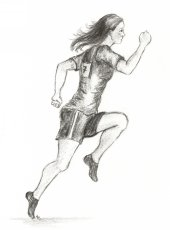

Skip ahead to:
Sporting Zeal
We should always play sport to win. If we are playing competitive sport we should do everything we possibly can to win every time we enter the sporting arena.
Some people display a decidedly weak attitude towards their chosen sport. They play sport competitively yet do not have the drive to win at all costs. Team training is only an option. Training hard in all kinds of weather is unnecessary. Personal training is out of the question. This is an unacceptable attitude, especially for a Christian.
Ex-All Black flanker, Michael Jones, provides an excellent example of a healthy attitude toward sport. For most of his career Jones was considered by many to be the greatest open-side flanker in the world. Many still believe he is the best we have ever seen (though some say Richie McCaw has inherited that mantle). Jones was known for being tough and uncompromising—one of the heaviest tacklers in the history of the game.
A journalist once asked Jones how he could, as a Christian, justify tackling his opposition with such ferocity. With his idiosyncratic grin Jones quoted Acts 20:35: “It is better to give than to receive.” Ask anyone who played alongside or against Jones and they will tell you he put absolutely everything he had into his game. Writes Jones: “I don’t see any discrepancy between the “aggressiveness” of sport and Christian values. Attributes are a gift from God, everyone has something special, and I was created with an ability to play this game … I had to be confrontational without being dirty or playing outside rules of the game, it was controlled aggression, whilst expressing the gifts as best you could.” [1] I think this is the way everyone should approach sport.
In Colossians 3:23–24 Paul tells us to do everything “heartily, as to the Lord.” Why? Because we know that we will receive the great inheritance from God, thanks to the redemptive work of His Son, Jesus Christ. Christ came to earth with a mission: “to seek and to save what was lost.” [2] God did not send Him to earth with the instructions “it doesn’t matter if you conquer death or not, just as long as you do your best.” No, Jesus came with the goal of winning, no matter what the cost. And the cost was high. God wants us to recognise this by approaching everything we do, including sport, with the same attitude.
To pre-empt any angry responses to this article from those who are completely disinterested in sport, allow me to clarify. I am not saying that every human being must have a burning desire to play sport and be successful in it.
Many find a game of rugby about as interesting as … well, a game of cricket, and there is nothing wrong with that. I would rather watch a documentary on the genetic make-up of the dung beetle than program a computer. My point is that if you are going to play competitive sport you should play it with complete commitment.
The “winning is not important” idea spawns from the KiwiSport phenomena that hit New Zealand’s shores in 1988. One of KiwiSport’s goals is to eliminate “unnecessary pressure to win.” [3]
I vividly remember being horrified as a primary school cricket player when we were made to play with plastic bats and balls and were then told our runs were not even being counted. What is the point of playing at all? I wondered. At an athletics day my best friend and I received absolutely no recognition after coming first and second in the 100-metre sprint. Instead, everyone got a “participation award.” KiwiSport (despite its good intentions) has eliminated winning full stop.
The danger of removing the pressure to win is that the desire to win goes with it. Eventually New Zealand sportsmen lose sight of their goal, which is, of course, to win. There are dangers in the KiwiSport attitude for Christians in particular. If a Christian is seen to be putting in only a half-hearted effort into his chosen sport, what kind of image does that portray? As I said earlier, Christ certainly did not have that attitude as He went about His redemptive work. If we are to be good imitators of Christ we need to have the same attitude when it comes to playing sport.
Young people in particular should be taught that when we play sport we play hard—as hard as we possibly can. And we play as hard as we can because we are trying to win. Winning is important. Any other attitude should be despised. Do everything unto the Lord. When we play sport we should try to win, unto the Lord. If we succeed in maintaining this attitude we glorify God.
And after all, isn’t that the goal of a Christian? Strive to glorify your Creator.
Footnotes
[1] From All time All Black “Great” in Anew NZ’s “Visions by Leading Kiwis”
[3] From KiwiSport, The KiwiSport Attitude